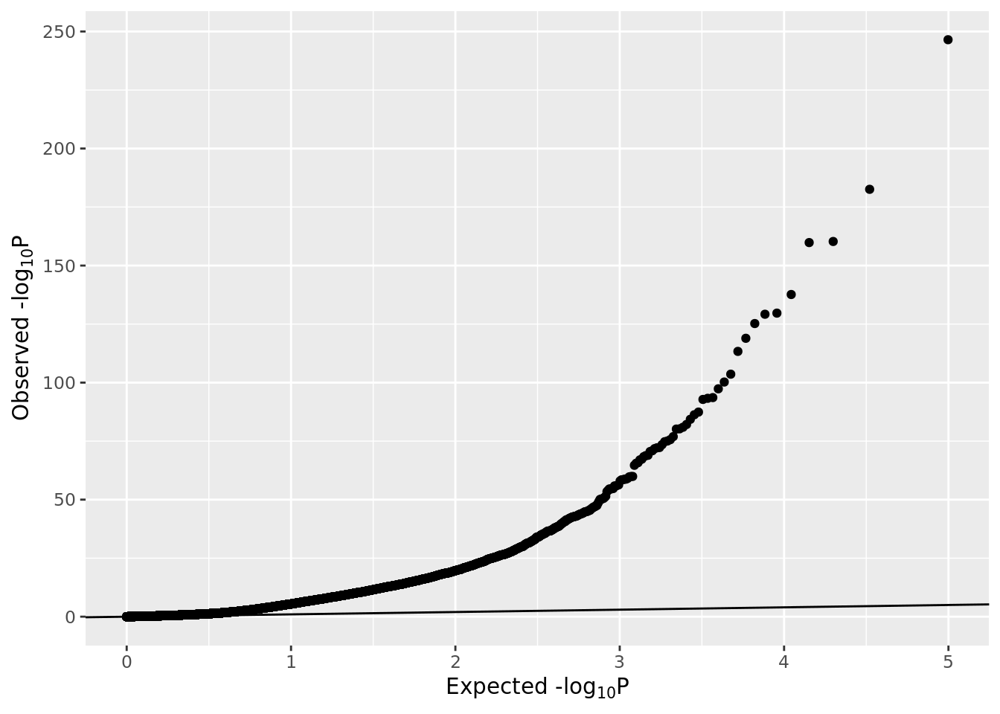
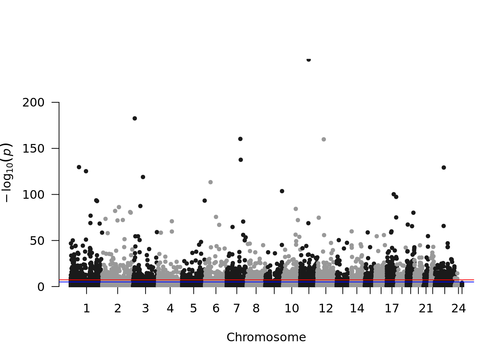
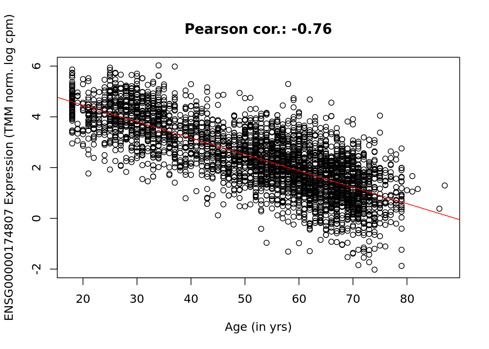

A transcriptomewide association study can be run using the same approach as an EWAS.
library(BBMRIomics)
bbmri.data(rnaSeqData_ReadCounts_BIOS_Freeze2_unrelated)
covariates <- c("sex", "smoking", "biobank_id")
phenotype <- "sampling_age"
nas <- apply(as.data.frame(colData(counts))[,c(phenotype, covariates)], 1, anyNA)
table(nas)## nas
## FALSE TRUE
## 3225 334## 'data.frame': 3225 obs. of 4 variables:
## $ sampling_age: int 43 65 33 51 43 77 49 53 27 55 ...
## $ sex : chr "female" "female" "male" "female" ...
## $ smoking : chr "current smoker" "former-smoker" "non-smoker" "current smoker" ...
## $ biobank_id : chr "LL" "LL" "LL" "LL" ...## 'data.frame': 3225 obs. of 4 variables:
## $ sampling_age: int 43 65 33 51 43 77 49 53 27 55 ...
## $ sex : chr "female" "female" "male" "female" ...
## $ smoking : Factor w/ 3 levels "current smoker",..: 1 2 3 1 1 3 3 2 3 2 ...
## $ biobank_id : chr "LL" "LL" "LL" "LL" ...## num [1:3225, 1:10] 1 1 1 1 1 1 1 1 1 1 ...
## - attr(*, "dimnames")=List of 2
## ..$ : chr [1:3225] "BIOS5537445E" "BIOSBFBBBED9" "BIOS3FB6E22E" "BIOSBEB8A07A" ...
## ..$ : chr [1:10] "(Intercept)" "sampling_age" "sexmale" "smokingformer-smoker" ...
## - attr(*, "assign")= int [1:10] 0 1 2 3 3 4 4 4 4 4
## - attr(*, "contrasts")=List of 3
## ..$ sex : chr "contr.treatment"
## ..$ smoking : chr "contr.treatment"
## ..$ biobank_id: chr "contr.treatment"data <- assays(counts)$data
library(edgeR)
y <- DGEList(data)
sds <- apply(y, 1, sd)
quantile(sds, probs=0.1)## 10%
## 0.03520165tstat <- fit$coef/fit$stdev.unscaled/fit$sigma
pval <- 2 * pnorm(-abs(tstat[, 2]))
padj <- p.adjust(sort(pval, decreasing = FALSE), method = "bonf")
head(padj[padj < 0.05])## ENSG00000174807 ENSG00000163520 ENSG00000091129 ENSG00000110881 ENSG00000173114
## 1.619307e-242 1.317583e-178 2.537973e-156 7.460167e-156 1.148739e-133
## ENSG00000158966
## 1.031009e-125gp <- ggplot(data.frame(pval=pval), aes(sample=-log10(pval)))
gp <- gp + stat_qq(distribution=stats::qexp, dparams=list(rate=1/log10(exp(1))))
gp <- gp + xlab(expression(paste("Expected -log"[10], plain(P))))
gp <- gp + ylab(expression(paste("Observed -log"[10], plain(P))))
gp <- gp + geom_abline(slope=1, intercept=0)
gp
## GRanges object with 49735 ranges and 1 metadata column:
## seqnames ranges strand | gene_id
## <Rle> <IRanges> <Rle> | <character>
## ENSG00000000003 X 99883667-99894988 - | ENSG00000000003
## ENSG00000000005 X 99839799-99854882 + | ENSG00000000005
## ENSG00000000419 20 49551404-49575092 - | ENSG00000000419
## ENSG00000000457 1 169821804-169863408 - | ENSG00000000457
## ENSG00000000460 1 169631245-169823221 + | ENSG00000000460
## ... ... ... ... . ...
## ENSG00000270177 5 133562101-133563518 + | ENSG00000270177
## ENSG00000270178 3 179521851-179522154 + | ENSG00000270178
## ENSG00000270179 11 113239200-113239839 + | ENSG00000270179
## ENSG00000270182 7 27197963-27198595 + | ENSG00000270182
## ENSG00000270184 16 85817988-85821223 + | ENSG00000270184
## -------
## seqinfo: 25 sequences (1 circular) from an unspecified genome; no seqlengths## ENSG00000000003 ENSG00000000005 ENSG00000000419 ENSG00000000457 ENSG00000000460
## 7.703488e-06 3.841097e-01 3.300884e-01 3.824680e-06 6.736994e-01
## ENSG00000000938
## 5.524164e-14## ENSG00000270175 ENSG00000270177 ENSG00000270178 ENSG00000270179 ENSG00000270182
## 0.227680991 0.283357183 0.195873204 0.950020906 0.655623788
## ENSG00000270184
## 0.001032878rData <- rowRanges(counts)
mcols(rData)$pval <- pval ##possible since we subsetted counts already
rData## GRanges object with 49735 ranges and 2 metadata columns:
## seqnames ranges strand | gene_id
## <Rle> <IRanges> <Rle> | <character>
## ENSG00000000003 X 99883667-99894988 - | ENSG00000000003
## ENSG00000000005 X 99839799-99854882 + | ENSG00000000005
## ENSG00000000419 20 49551404-49575092 - | ENSG00000000419
## ENSG00000000457 1 169821804-169863408 - | ENSG00000000457
## ENSG00000000460 1 169631245-169823221 + | ENSG00000000460
## ... ... ... ... . ...
## ENSG00000270177 5 133562101-133563518 + | ENSG00000270177
## ENSG00000270178 3 179521851-179522154 + | ENSG00000270178
## ENSG00000270179 11 113239200-113239839 + | ENSG00000270179
## ENSG00000270182 7 27197963-27198595 + | ENSG00000270182
## ENSG00000270184 16 85817988-85821223 + | ENSG00000270184
## pval
## <numeric>
## ENSG00000000003 7.70348751228328e-06
## ENSG00000000005 0.384109664189747
## ENSG00000000419 0.33008844650229
## ENSG00000000457 3.8246797680786e-06
## ENSG00000000460 0.67369941795068
## ... ...
## ENSG00000270177 0.283357183163476
## ENSG00000270178 0.195873204341671
## ENSG00000270179 0.95002090589992
## ENSG00000270182 0.655623787505276
## ENSG00000270184 0.00103287838785457
## -------
## seqinfo: 25 sequences (1 circular) from an unspecified genome; no seqlengths## GRanges object with 49735 ranges and 2 metadata columns:
## seqnames ranges strand | gene_id
## <Rle> <IRanges> <Rle> | <character>
## ENSG00000000003 X 99883667-99894988 - | ENSG00000000003
## ENSG00000000005 X 99839799-99854882 + | ENSG00000000005
## ENSG00000000419 20 49551404-49575092 - | ENSG00000000419
## ENSG00000000457 1 169821804-169863408 - | ENSG00000000457
## ENSG00000000460 1 169631245-169823221 + | ENSG00000000460
## ... ... ... ... . ...
## ENSG00000270177 5 133562101-133563518 + | ENSG00000270177
## ENSG00000270178 3 179521851-179522154 + | ENSG00000270178
## ENSG00000270179 11 113239200-113239839 + | ENSG00000270179
## ENSG00000270182 7 27197963-27198595 + | ENSG00000270182
## ENSG00000270184 16 85817988-85821223 + | ENSG00000270184
## pval
## <numeric>
## ENSG00000000003 7.70348751228328e-06
## ENSG00000000005 0.384109664189747
## ENSG00000000419 0.33008844650229
## ENSG00000000457 3.8246797680786e-06
## ENSG00000000460 0.67369941795068
## ... ...
## ENSG00000270177 0.283357183163476
## ENSG00000270178 0.195873204341671
## ENSG00000270179 0.95002090589992
## ENSG00000270182 0.655623787505276
## ENSG00000270184 0.00103287838785457
## -------
## seqinfo: 25 sequences (1 circular) from an unspecified genome; no seqlengthsseqlevels(rData) <- gsub("X", 23, seqlevels(rData))
seqlevels(rData) <- gsub("Y", 24, seqlevels(rData))
pdata <- as.data.frame(rData)
pdata$seqnames <- as.integer(pdata$seqnames)
library(qqman)
manhattan(pdata, chr="seqnames", bp="start", p="pval")## Warning in manhattan(pdata, chr = "seqnames", bp = "start", p = "pval"): No SNP
## column found. OK unless you're trying to highlight.
top <- which.min(rData$pval)
y <- data[top, ]
x <- design[, 2]
plot(x, y, main = paste("Pearson cor.:", signif(cor(x, y), 3)), xlab = "Age (in yrs)",
ylab = paste(rownames(data)[top], "Expression (TMM norm. log cpm)"))
abline(lm(y ~ x), col = 2)